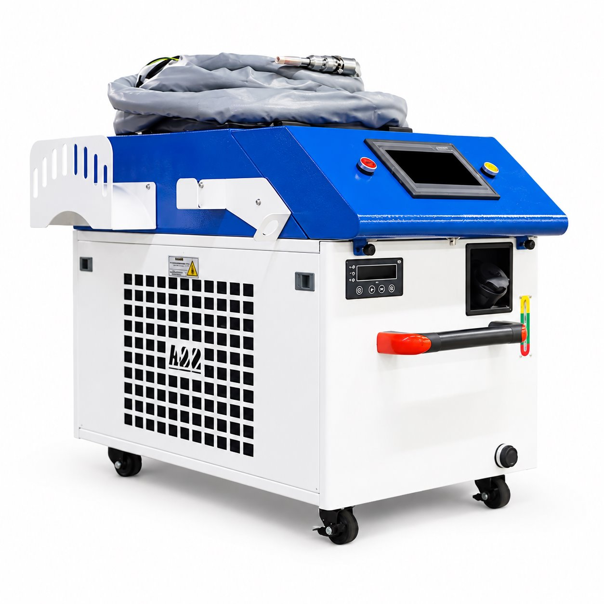

WELD-1500
نام و هویت محصول از فهرست ثبتشدهٔ سهند لیزر نقل شده است. اطلاعات سازنده، گزینههای خانواده و تصویر مرجع به معنی تأیید موجودی یا پیکربندی نصبشده نیست.


Compared with supplied C1500 poster: blue upper cabinet, hose, two upper buttons, lower display, gauge and side grille match the exterior. No internal assembly claim.
سند تطبیق
اطلاعات ثبتشده و دامنهٔ آن
| مدل / خانواده | 1500W دامنهٔ ثبت: identity · منبع |
|---|---|
| توان معرفیشده در پوستر همین مدل | 1.5 kW دامنهٔ ثبت: user_supplied_artwork · منبع |
| بازه دمای کاری درجشده در پوستر | 10–40 °C؛ مرجع پوستر معرفی محصول دامنهٔ ثبت: user_supplied_artwork · منبع |